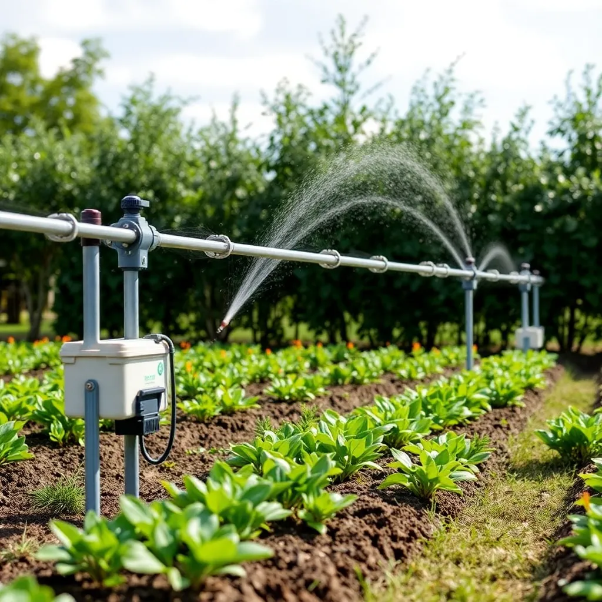
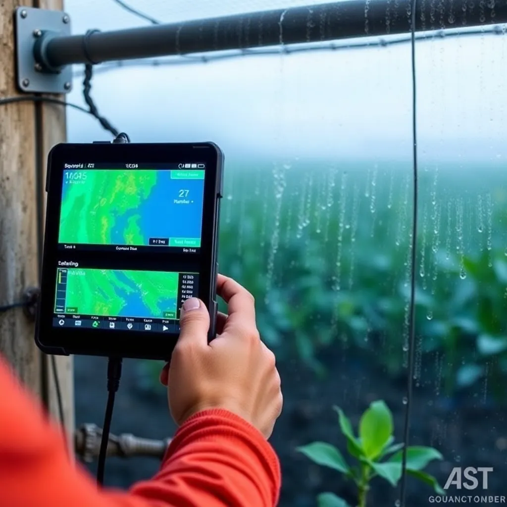

Soil Sensor Installation
Professional installation of advanced soil moisture and nutrient sensors to provide continuous and precise data, tailored to your farm's specific soil and crop types. Our experts ensure optimal placement for maximum efficiency.
$299 per installation

Smart Irrigation Setup
Design and deploy state-of-the-art irrigation systems using drip and sprinkler technologies integrated with sensor data. Improve water efficiency, reduce labor costs, and adapt irrigation schedules automatically for sustainable farming.
$499 per system
Agro Consulting Package
Personalized consulting services relating to soil health, irrigation management, fertilizer application, and pest control. Our experts work with you to develop tailored strategies backed by data and research for improved productivity.
$250 / hour
Comprehensive Soil Health Audit
Detailed soil testing, nutrient profiling, pH analysis, and microbial activity assessment. Our audits help identify nutrient deficiencies and guide precise fertilization and soil amendment plans.
$399 per audit

Continuous Moisture Monitoring
Real-time monitoring solution with alerts and detailed analytics enabling you to respond promptly to moisture stress situations, preventing crop damage and optimizing irrigation.
$99 monthly subscription
Soil Sampling & Testing
Scientific soil sample collection and lab testing to analyze nutrient levels, contaminants, and texture. Essential for making informed soil management decisions and improving crop yield.
$180 per sample